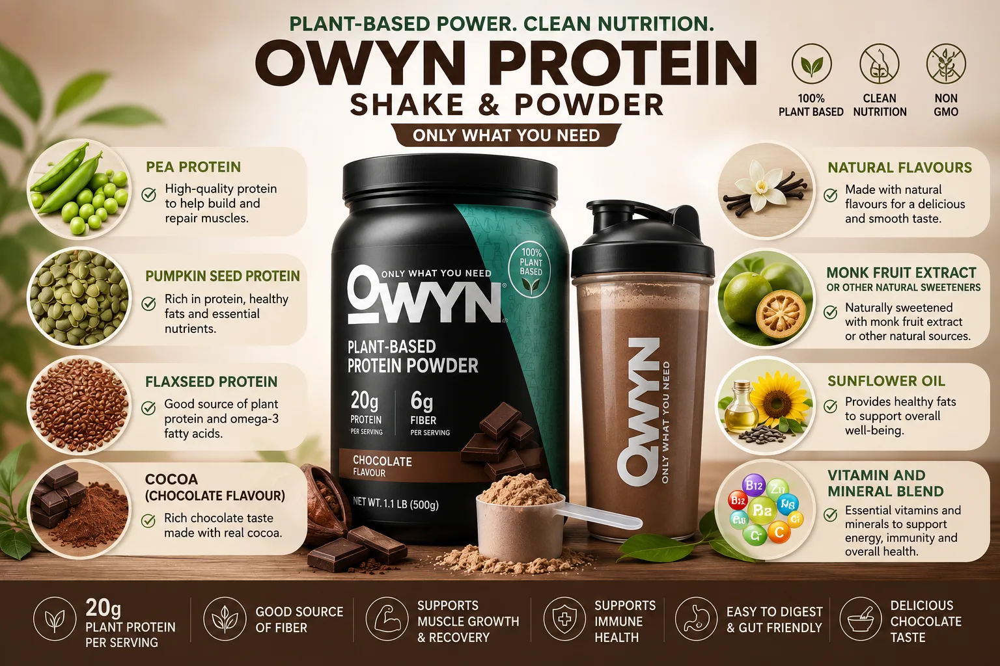

★★★★★
“OWYN protein powder mixes into oat milk smoothies with almost no grit. Chocolate is my favorite scoop.”
Owen Blake
Smoothie maker
Mixable Nutrition
Keep powder intent distinct from ready-to-drink shakes: ingredients, flavors, vegan protein powder options, and how OWYN powder fits your routine. For health and comparison questions, see the reviews and health guide.

OWYN protein powder is the mixable side of the brand for people who prefer smoothies, oatmeal, or custom shakes. Looking for owyn plant protein powder or vegan protein powder usually means you want a scoop instead of a ready-to-drink bottle. See how powders fit beside shakes in our homepage comparison.
Higher-performance shoppers may also compare owyn pro elite protein powder when they want a powder aligned with the Pro Elite lineup. Chocolate fans often search owyn chocolate protein powder specifically.
Searches for OWYN protein powder ingredients and powder nutrition facts belong here — not on the ready-to-drink ingredients page. Always check the canister label for the exact blend, sweeteners, and allergens for the flavor you buy.
An owyn protein powder review typically covers mixability, aftertaste, sweetness, and how the powder performs in water, plant milk, or smoothies. Broader health and brand-comparison questions sit on the reviews and health guide.
Allergen-conscious buyers frequently look for nut free protein powder. Others prioritize sugar free protein powder when they want to limit added sugars while still getting plant protein.
If taste is your top filter, searches for best tasting vanilla protein powder are common — vanilla powders are easy to customize with fruit, cocoa, or coffee.

An all in one protein powder approach appeals to people who want protein plus broader nutrition support in one scoop. Pair that with interest in a protein shake without artificial sweeteners if clean-label taste matters to you.
Prefer drinking over mixing? A sugar free protein drink can be a ready-to-sip alternative when you want similar goals without a blender.
Customer Reviews
Mixable powder fans talk taste, blendability, and clean-label goals.
“OWYN protein powder mixes into oat milk smoothies with almost no grit. Chocolate is my favorite scoop.”
“I wanted sugar free protein powder vibes without weird aftertaste. This plant powder fits my cleaner routine.”
“I add OWYN plant protein powder to overnight oats. Easy protein boost and the vanilla flavor is versatile.”